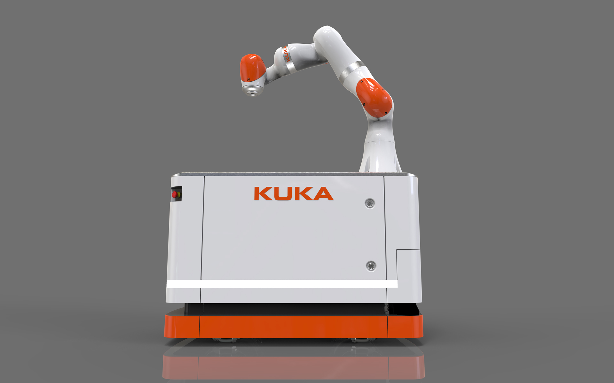
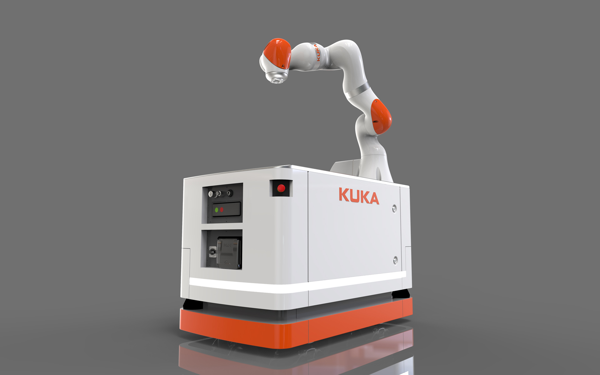
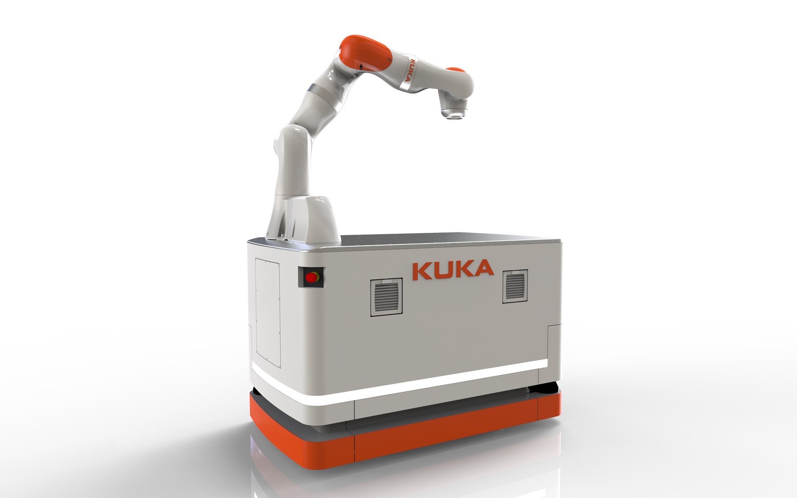
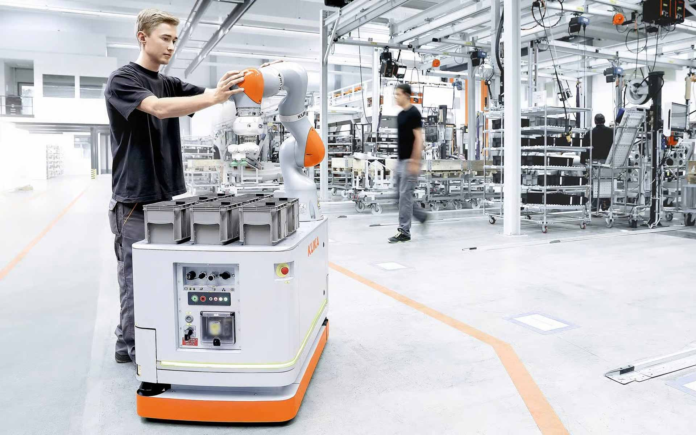

KUKA KMR 200 iiwa
Mobile Robotic
KUKA KMR 200 iiwa
Mobile Robotik
Omnidirectional and safe operating mobile robot-platform for industry 4.0 production concepts with various and flexible applications in direct human-robot cooperation.
The KMR 200 iiwa fetches required components independently, fits machine tools and deposits finished
workpieces. As an intelligent industrial work assistant it relieves the worker before strenuous and tiring
tasks.
Highest precision and simple operation control positioning accuracy ±1 mm Autonomous navigation with
collision-free path planning
Selić Industriedesign service: Design concept, design consultation, design sketches, CAD design support,
CAD freeform modeling, design refinement, processing of design data for the engineering department
Omnidirektional und sicher verfahrende, mobile Roboterplattform für Industrie-4.0-Produktionskonzepte mit vielfältigen, flexiblen Anwendungsmöglichkeiten in der direkten Zusammenarbeit von Mensch und Roboter.
Der KMR 200 iiwa holt selbständig benötigte Bauteile, bestückt Werkzeugmaschinen, legt bearbeitete
Werkstücke ab. Er entlastet als intelligenter, industrieller Produktionshelfer somit den Werker vor
anstrengenden, ermüdenden Aufgaben.
Höchste Präzision und einfache Bediensteuerung, Positioniergenauigkeit ±1 mm Autonome Navigation mit
kollisionsfreier Bahnplanung in der Arbeitsumgebung
Selić Industriedesign Dienstleistung: Designkonzept, Designberatung, Designentwürfe,
CAD-Designunterstützung, CAD-Freiform-Modellierung und Detailgestaltung, Aufbereitung von Designdaten
für die Konstruktion




Images © Selić Industriedesign